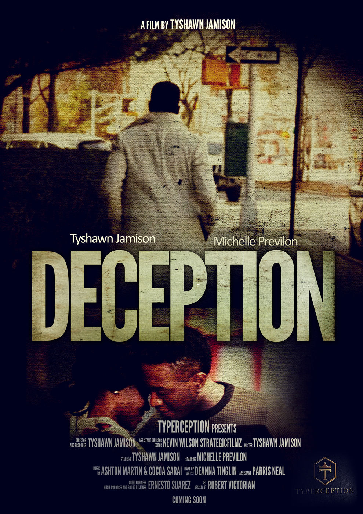

Filmmaker, cinematographer and SAG-AFTRA actor making films, documentaries, music videos and brand work in Brooklyn, New York.
ScrollTyshawn Jamison
WIX STUDIO · Section with 28px padding on a black background; inside it, a Video Box (reel, muted, loop, autoplay). Name = one text box, Archivo Condensed ExtraBold, sized to span the frame. Entrance: "Reveal" from bottom, 1.2s. Timecode is decoration; skip it or use a small Velo timer.
Tyshawn Jamison makes films that feel lived in. An actor who directs from inside the scene  and a cinematographer who lights it with intention.
and a cinematographer who lights it with intention.
WIX STUDIO · Statement = one rich-text box in Newsreader Light. The small rounded clips are separate Video Boxes placed in the line breaks of a flex row (or drop them on mobile). Scroll effect on the text: "Reveal" by line. Facts row = 3 text boxes, Entrance "Fade in" with 0.15s stagger.
Selected(05)
Backstage at Barclays Center for Wild 'N Out Live.

Deception, now streaming on Prime Video.
The Rehearsal, where the lines get personal.

Susan Oludele, from her first chair to celebrity hairstylist.
Lighting studies: one face, four moods.
WIX STUDIO · Use a 12-column CSS grid section and place each project by hand at a different width and offset (8 cols, 3 cols, 5 cols, 4 cols, 10 cols). Media: Video Box set to autoplay muted. Entrance animation "Reveal" (bottom) plus Scroll effect "Shrink" on the inner video. Caption underline = Hover interaction on the title.
WIX STUDIO + VELO · Repeater connected to a "Projects" CMS collection (title, category, role, line, clip). Background = Multi-State Box, one state per project, each holding a Video Box. Velo: repeater item onMouseIn → changeState(); filter labels → dataset.setFilter(). Other rows dim with a Hover interaction on the repeater.
From the first call to the final grade.
Every project gets creative direction, cinema-camera capture and a finished edit. Larger productions get a written quote within a day.
- 01
Film & brand production
From$1,000Concept, shoot, edit and color for campaigns and branded stories.
- 02
Music videos
From$500Treatment, performance and narrative coverage, lit for the song.
- 03
Documentary & podcast
RateQuoteMulti-camera interviews and verité coverage, cut into a story.
- 04
Events & live streaming
RateQuoteBackstage access, recap films and live switching.
- 05
Self-tapes & actor reels
RateQuoteDirected by a working SAG-AFTRA actor, read by one too.
- 06
Portrait & product photography
RateQuoteStudio and location stills with the same lighting approach.
WIX STUDIO · Left column: pin with "Sticky" in the section layout. Each rate row = a container linked to its Wix Bookings service page. Red fill on hover = Hover interaction on the container (background color, 0.5s). Replace "Quote" with real starting prices when Ty has them.
An actor's eye, behind the camera.
I'm Tyshawn Jamison, a Brooklyn filmmaker and storyteller. Years in front of the lens taught me what a performer needs, so I direct from inside the scene and light it with intention. Typerception is the studio I built to make that work for artists, brands and other filmmakers.
- Written & directed by
- Tyshawn Jamison
- Union
- SAG-AFTRA
- Training
- Full Sail University
- Camera
- Sony FX6
- Distribution
- Amazon Prime Video
- Based in
- Brooklyn, New York
Consult
A short call on the story, the audience and the budget.
Pre-production
Script, shot list, locations and a lighting plan.
Shoot
Cinema-camera capture, lighting and clean sound.
Deliver
Cut, color and mix, delivered for every platform.
WIX STUDIO · Credits = two text columns (right-aligned labels, left-aligned names), like end credits. Portrait: Entrance "Reveal" + Scroll effect "Parallax" at 20%.
WIX STUDIO · Section with a video background (drone clip) and a dark overlay at 38%. The two headline lines stretch edge to edge; set the text to fill the width at each breakpoint.
- Studio
- Brooklyn, New York. Travel available.
WIX STUDIO · Wix Forms with underline-only inputs (border bottom 1px, no fill). Project and budget = single-choice fields styled as pill buttons. Submissions go to Wix Inbox and email.